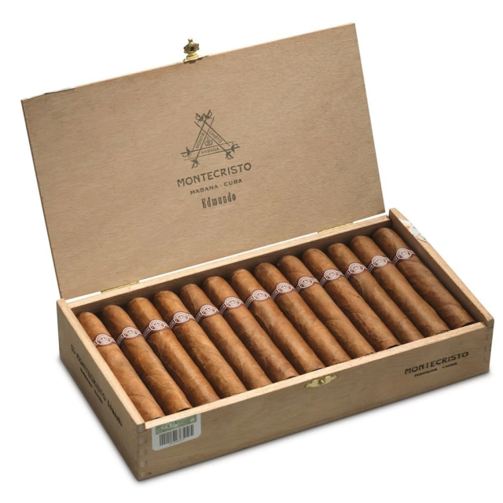
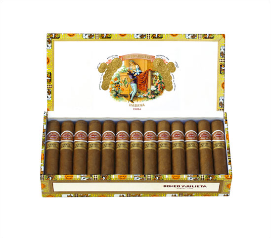

First we are going to start with the most expensive whiskeys:
The Macallan in Lalique Cire Perdue : There is only one 1.5-liter bottle of this 64-year-old aged whiskey. The container was crafted by the French glassmaker Lalique to commemorate the 150th anniversary of its creator. The auction price reached $460,000.


Dalmore 64 Trinitas : There are only three bottles of this beverage that have been aged for at least 140 years. Each of them has been acquired for over $160,000.
the most expensive wines:
Egon Muller Scharzhofberger Riesling Trockenbeerenauslese : This white wine is produced by Egon Muller in the famous Scharzhofberg vineyard, within the expansive Mosel region known for its intense Riesling wines. This Trockenbeerenauslese is a sweet and concentrated wine, vinified from a strict selection of fully shriveled and dehydrated grapes affected by botrytis noble rot. Its production is limited to a few hundred bottles. Average Price - Euros: €9,017 - USD: $10,641.
Domaine de la Romanée-Conti Grand Cru, Côte de Nuits : It is born from a 1.8-hectare vineyard with 60-year-old vines, and an average of 5,500 bottles are produced per harvest. Its average price is nearly $16,600, although its highest quotation has reached $87,500. Many consider the classic Vosne-Romanée wine made with Pinot Noir to have the perfect balance of weight, structure, elegance, and longevity. Tasting notes often refer to a combination of tart red fruits (particularly cherries and raspberries) and darker elements of undergrowth, licorice, and smoke. Average Price - Euros: €13,526 - USD: $15,961.
And finally, the most prestigious cigars.
Montecristo Edmundo : A magnificent proportion between its length and ring gauge in this vitola, which bears the same name in the factory, with a superb trajectory throughout the combustion, filled with nuances and a strength that is characterized as medium to high, flavorful, and with some earthy notes, all with a well-defined characteristic in the balance of flavors and aromas.
Romeo y Julieta Petit Churchills : With a medium to high strength (three out of five), this small format offers us a magnificent balance of flavors and aromas from beginning to end of the tasting, along with a superb proportion between its length and ring gauge, featuring subtle hints of white pepper and toasted notes.
The best whiskey

Johnnie Walker Blue Label is the crown jewel of the Walker house.
It is an unrepeatable Blended Scotch Whiskey that recreates the
classic whiskeys of the 19th century, inviting us on a sensory journey.